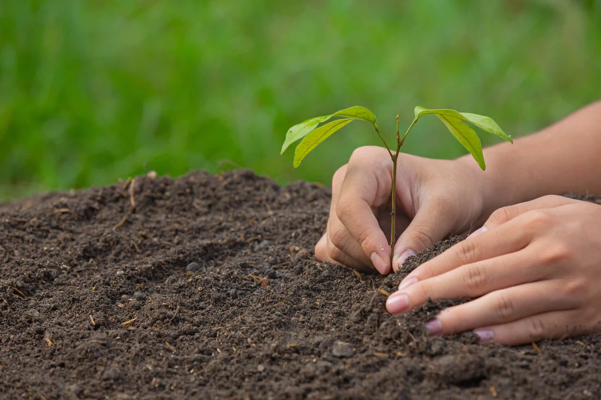

Nos Plantations

Fort de nos 25ans d’expérience, nous vous apportons un regard et un conseil de qualité afin de transformer vos rêves en réalité. LUCAS JARDINS c’est une véritable expertise au travers de conseils aiguisés avec un accompagnement de qualité ! En tant que professionnels nous avons un « devoir de conseils » quant aux choix les plantations et végétaux, afin de vous accompagner pour sublimer vos idées, et ainsi vous donner pleine satisfaction de voir cette création s’épanouir et grandir.